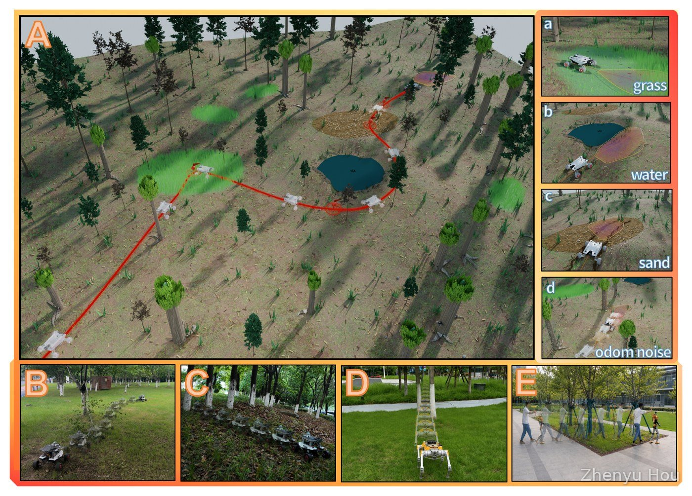
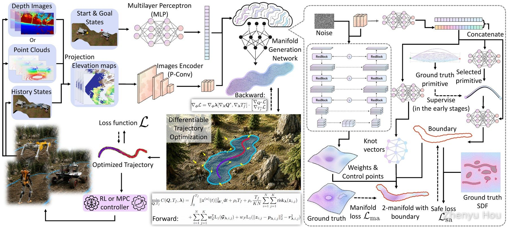

Research Projects
I am passionate about developing algorithms that enable robots to perform complex tasks in the real world, across aerial, ground, quadruped, and humanoid platforms. Below is a selection of my research and engineering projects.
Since August 2026, I have been a graduate research assistant in the RobotiXX Lab at George Mason University, supervised by Prof. Xuesu Xiao. My ongoing research projects include:
- Building and integrating a Verti-Wheelers-based robotic platform and developing its autonomous navigation framework for off-road operation on uneven and vertically challenging terrain.
- Developing autonomous navigation for the Direct Drive Tech DIABLO wheeled-legged robot, with a focus on stair ascent and descent, and integrating equivariant neural networks into Proximal Policy Optimization (PPO) for learning locomotion control policies.
- Developing autonomous navigation methods for tractor–trailer systems on challenging terrain, focusing on motion planning and control in uneven, unstructured environments.
- Developing cooperative aerial–ground navigation over uneven terrain, coordinating unmanned aerial vehicles (UAVs) and ground robots for autonomous off-road navigation.
- Investigating cross-embodiment navigation by learning forward kinodynamic (FKD) models on small-scale robotic vehicles, with the goal of transferring the learned models to larger vehicle platforms for autonomous navigation.
{kind=link}
{kind=link}
{kind=link}
DiffTOM is an end-to-end trajectory generation framework for ground robots on uneven terrain that embeds differentiable trajectory optimization into neural network training. Instead of regressing trajectories with hand-crafted losses, a network predicts the traversable region as a differentiable 2-manifold with boundary, and an explicit trajectory optimization problem built on this manifold enforces safety and terrain-associated kinematic constraints, so the learned planner stays interpretable while preserving optimality.
{kind=link}

- Manifold generation network: a diffusion head generates the manifold surface and a motion-primitive-based head generates its boundary, capturing the multimodality caused by unknown regions and obstacle avoidance.
- Differentiable trajectory optimization: the predicted manifold becomes safety and kinematic constraints, and trajectory-level losses are back-propagated through the optimizer via implicit differentiation, so perception and planning are trained jointly against the downstream trajectory cost.
- Map-less and real-time: the planner runs directly on onboard depth and odometry, taking about 9.4 ms per replanning step, more than an order of magnitude faster than classical and sampling-based baselines.
{kind=link}

In a high-fidelity forest simulator with 200 randomized ~45 m tasks, DiffTOM achieves the highest success rate (95.0%) and the shortest mean travel time among four baselines (iPlanner, YOPO, SEB-Naver, and MPPI) at the high-speed setting, with zero collisions. It stays robust to tall grass, pose-estimation noise, slippery sand, and puddles, and transfers to real-world differential-drive, quadruped, and humanoid robots with only light fine-tuning: the AgileX SCOUT MINI, the MirrorMe Apollo, and the Westlake Robotics TITAN O1.
Paper: IEEE Transactions on Robotics (T-RO), under review.
This project proposes a global-map-free navigation framework for efficient autonomous robot navigation in complex terrains.
The framework employs Sparse Gaussian Processes (SGP) to extract geometric features—such as curvature, gradient, and elevation—
from point cloud data. GPU acceleration is used during feature extraction to ensure real-time performance.
These features are integrated into a high-resolution local traversability map using a spatial-temporal Bayesian Gaussian
kernel inference method that fuses historical and real-time information with slope, flatness, gradient, and uncertainty metrics.
Extensive simulations demonstrate significant improvements in accuracy and computational efficiency compared with traditional methods.
The framework is integrated into a planner and validated through autonomous navigation experiments on a real robot.
Paper: arXiv:2503.04134 (IROS 2025, Oral)
Source code: github.com/ZJU-FAST-Lab/FSGP_BGK
Project website: IROS 2025 project page
Co-developed a scale-based collision metric for convex polyhedra that is simultaneously smooth, signed, and solver-free. The work traces the nonsmoothness of the original LP-based metric to sudden switches of the active constraint set (corner-to-corner and face-to-face contacts), unifies the metric over positive and negative scales so that it stays well defined even when the robot’s scaling center lies inside an obstacle, and replaces the LP solver with vertex enumeration plus analytic smoothing, yielding a closed-form expression with analytic pose gradients.
Integrated into MINCO-based trajectory optimization on an AgileX SCOUT MINI with FAST-LIO localization and NMPC tracking, the metric passes constrictions as narrow as 0.66 m where the LP-based metric collides, approaches a goal placed inside an obstacle from the side with minimal intrusion, and supports long-range navigation in cluttered environments.
{kind=link}
{kind=link}
Paper: IEEE Transactions on Robotics (T-RO), under review.
This work presents a lightweight, high-order–smooth trajectory representation and a coupled space–time optimization framework for articulated tractor–trailer planning. By deforming trajectories directly in continuous free space, the method eliminates repeated safe-corridor construction, greatly accelerates computation, and reduces both curvature and travel time.
Building on this framework, I conducted full-scale trials with a 7 m tractor–trailer (1:1 real vehicle). Apollo’s native lateral LQR and longitudinal PID controllers, together with the PIX-series CAN-bus protocol, were re-engineered as ROS nodes; for comparison, I also implemented an MPC controller. All components were seamlessly integrated with the planner, yielding a complete perception– mapping–planning–control loop. Real-world tests—spanning indoor/outdoor transport, loading/unloading, and narrow-aisle navigation— achieved a mean tracking error of ≈ 0.11 m, satisfying industrial-grade precision requirements.
Paper: IEEE T-ASE 2025 (ICRA 2026 Oral)
Source code: github.com/Tracailer/Tracailer
Developed large-scale 3D aerial-swarm coordination for low-altitude applications by combining flow matching with
multi-agent path finding (MAPF). The framework integrates global flow guidance, local interaction modeling, and
PIBT-based conflict resolution, and was evaluated on 1,000- and 10,000-agent simulation benchmarks. I also contributed to
FLIP, a distributed formation-planning framework combining
outlier-robust point cloud registration with trajectory optimization for resilient formation flight.
Related papers: GuardPIBT (ICRA 2027, under review;
project page) and
FLIP (IROS 2026; arXiv).
Designed and deployed a world-model-based cooperative navigation framework for ground robots by extending SeqWM. A memory-aware dynamic agent-ordering mechanism is integrated into sequential prediction and decision-making, using interaction history to adapt the coordination order while retaining explicit inter-agent intention sharing.
Designed and built an Ackermann-steered robotic platform for F1TENTH and off-road navigation research, and developed its
ROS 2/Nav2-based autonomous navigation framework. Livox MID-360 sensing, FAST-LIO2 localization with EKF-based state
estimation, and VESC-based vehicle control are integrated into a unified mapping–localization–planning–control stack
that supports command arbitration between manual and autonomous operation.
Source code: RallyCore
During my internship at MirrorMe Technology (March–August 2026), mentored by Ze Wang, I worked on the Apollo quadruped robot in two directions:
- End-to-end navigation: developing end-to-end navigation for Apollo with a focus on autonomous navigation over uneven terrain, built on our DiffTOM framework (T-RO, under review), e.g., avoiding obstacles between trees in a forest.
- RL locomotion: deploying reinforcement learning (RL)-based locomotion control policies on Apollo and integrating the learned controllers into the robot’s hardware control stack for real-world quadrupedal locomotion, such as climbing stairs.
During my internship at Westlake Robotics (January 2025 – August 2026), supervised by Senming Tan and Zhenyu Wei, I was responsible for autonomous navigation development for the Westlake Robotics O1 humanoid robot, including the development and integration of an end-to-end navigation framework.
In this project, I extend our spline-based trajectory optimization navigation framework ST-opt-tools to humanoid robots operating in cluttered indoor environments. ST-opt-tools is a trajectory-optimization stack built on top of the high-performance SplineTrajectory library, providing an end-to-end pipeline:
- ESDF environment mapping → A* path planning → L-BFGS trajectory optimization
- Integrated obstacle-avoidance and dynamics constraints for safe, feasible trajectories
- High-performance optimization leveraging SplineTrajectory’s fast evaluation
- Clean, plug-and-play APIs for robots, UAVs, and autonomous driving applications
For perception, the humanoid uses our FSGP-BGK traversability module (see the IROS 2025 work and demo: video) to build a dense local traversability map from point clouds. This map feeds into the ST-opt-tools navigation layer, which generates safe, dynamically feasible trajectories in real time.
At the control level, we employ an rsl_rl-based locomotion policy to track the optimized trajectories and handle contact-rich legged locomotion on uneven indoor terrain. The clips below illustrate the progression from early sim-to-real trials with unstable RL behavior, to intermediate locomotion tuning, and finally the fully integrated navigation demo in indoor environments.
This project involved the development of a ground point cloud perception and ground–obstacle separation algorithm suitable for various environments. The algorithm significantly improved point cloud processing efficiency and reduced interference from virtual ground points caused by LiDAR reflection noise, using voxel downsampling (Fast Voxel Hashing) and reflection noise removal techniques. It utilized region-wise vertical plane fitting to remove low vertical structures—such as guardrails and wall corners—improving the accuracy of subsequent ground fitting.
Combined with Local Roughness and Elevation Estimation (LRAE), the algorithm enabled perception of uneven terrain and used an incremental map update method from ROG-MAP to reduce computational overhead. It performed well on the KITTI dataset and operated above 100 Hz on a Jetson Orin NX, meeting real-time demands for quadruped robots or UGVs in complex environments, with real-world testing on Boston Dynamics’ Spot.
Additionally, the project utilized a ZED stereo camera and a YOLO-based detection and tracking pipeline for human-aware navigation. This project was supervised by Prof. Yiannis Demiris and Dr. Fernando E. Casado at the Imperial College Robotics Summer School.
This work was also carried out during my internship at Westlake Robotics.
- Designed and deployed a GP-CBF-MPC safe navigation algorithm, integrating Gaussian Process–based terrain traversability assessment with Control Barrier Functions and Model Predictive Control, and deployed it on a quadruped robot platform.
- Developed an engineering-grade planning framework for quadrupeds: the global planner adopted hybrid A* with a state-machine structure inspired by EGO-Planner, while the local planner integrated the RDA Planner. The system was deployed on real hardware and successfully navigated dense indoor environments with obstacle avoidance.
Tested the FastSim simulator, integrating it with drone localization (using FAST-LIO and LOAM) and autonomous exploration (using FUEL) algorithms for both structured and unstructured dark environments.
Developed an aerial–ground autonomous navigation system for drones using FAST-LIO and EGO-Planner. Achieved point-cloud map relay sharing during exploration. Designed and built a quad-fisheye-based localization drone inspired by OmniNxt, implementing VIO-based localization using OpenVINS.
Deployed lightweight drones equipped with VIO (VINS-Fusion) and autonomous flight using EGO-Planner. Conducted multi-drone VIO experiments using COVINS-G and tested DM-VIO, ORB-SLAM, and A-LOAM. Constructed an autonomous drone swarm employing a LiDAR-based EGO-Swarm algorithm, enabling independent flight in both outdoor sparse-feature environments and indoor structured settings.
Developed WiFi signal detection software for aerial–ground robots using PyQt and Linux network interfaces. Investigated aerial–ground robot communication planning and mesh networking, focusing on transmission of odometry and map data under constraints of bandwidth, communication quality, and UAV energy. This was coupled with FUEL- and EGO-Planner–based multi-UAV exploration. The concept was inspired by the MRS group at CTU and Prof. Saska’s work.
The future of unmanned transport technology is rapidly developing, and the scale of unmanned devices is expanding,
while labour costs are rising and demand for logistics is increasing. Against this background, we proposed a project
to achieve efficient logistics and distribution by integrating multiple unmanned devices so that they can operate in
concert and relay parcels under different requirements.
Responsibilities:
Implemented RRT and RRT* path planning and navigation for a quadruped robot in Gazebo; performed rendering simulations
for both drones and quadrupeds using Blender. Conducted GPS spoofing experiments using HackRF, validated spoofing on
simulated target robots, and performed market research on potential countermeasures. Also responsible for technical
feasibility studies and organizational design.
Awards:
Outstanding Camper, 2023
Red Bird Challenge Camp,
HKUST (GZ)
Project Introduction: The National University Robotics Competition RoboMaster is a robotics event jointly sponsored by several prestigious organizations and hosted by DJI.
Responsibilities:
1. Laboratory creation: Negotiated with university leaders and secured funding to build the robotics lab from scratch
(multi-school collaboration, ~40 members).
2. Team management: Managed the project using Coding and Feishu; established lab safety and management systems.
3. Financial management: Established a triple-approval process and obtained motor sponsorship from
DirectDrive.
4. Robot control debugging: Tuned PID parameters under FreeRTOS, applied cascaded PID control and inverse kinematics
for mecanum/omni wheels.
5. Wiring design: Completed design and physical wiring for Infantry, Hero, and Sentry robots.
6. Algorithm debugging: Assisted in camera selection and calibration, LiDAR and multi-camera fusion, radar calibration,
YOLO detection on ROS, 3D printing, and Gazebo simulation.
In the 2023 RoboMaster University Championship, I led the CAUC-DGUT-SCU-Tsinghua joint team. Related videos: 2023 Video 1, 2023 Video 2, 2022 team video.
Awards:
3rd place in the National RoboMaster Championship, 2023 (DJI)
2nd place in the National RoboMaster 3v3 League (Shanxi Division), 2023 (DJI)
3rd place in the National RoboMaster 3v3 League, 2022 (DJI)
Project Description: A youth robotics competition under FIRST, supported by NASA and Qualcomm,
where teams develop robots capable of fetching and grasping specific targets under both autonomous and teleoperated modes.
Responsibilities:
1. External liaison and engineering documentation.
2. Participation in mechanical construction and SolidWorks simulation design.
Awards:
Individual Award & Incentive Award, 2018 FIRST Tech Challenge (Suzhou)